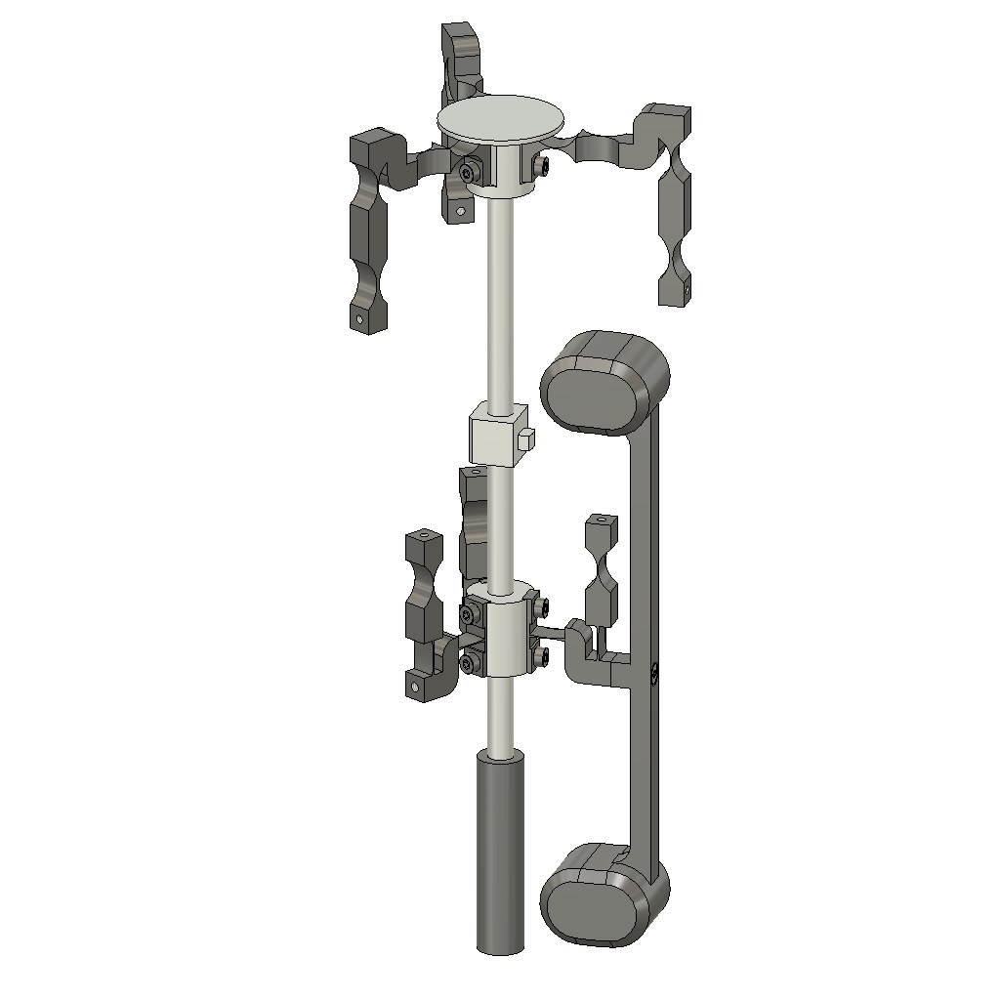

FlyForce
A 3-axis force sensor for a measuring probe, built only from flexure hinges and balanced so that the robot's accelerations don't show up in the measurement.
- Course
- Mechanism Design II
- School
- EPFL, bachelor's in microengineering
- Team
- 5 students
- Grade
- 5.25 / 6
- Status
- Designed and sized on paper, not built

The brief
A 200 mm stylus with a sapphire ball touches the part being measured. The sensor has to measure the contact force along x, y and z (±5 N, with a resolution under 1.5 mN and a stiffness of 5 N/mm), while the robot carrying it accelerates at up to 6 m/s² and turns at up to 5 rad/s. The guiding had to use flexures only: no friction and no play.
How it works
The stylus is fixed to a vertical bar that tilts around a point P for x and y, and moves along z thanks to three arms set 120° apart. Four counterweights keep the centre of mass on P, so gravity and linear accelerations don't move the stylus, and the symmetry of the arms cancels the moments as well. Three Micro-Epsilon capacitive sensors read the displacement: a CSH3FL for z and two CSH05FL for x and y.
Sizing
We wrote the stiffness of the whole mechanism from the strain energy of its 21 hinges, as a function of the force direction and the stylus displacement. We then tuned each hinge until the stiffness stayed at 5 N/mm in every direction. All the hinges are steel notch hinges, between 0.08 and 0.63 mm thick, and each one stays under its fatigue limit for 10 years of use.
Results
The sensor fits in a 179.5 mm × Ø84 mm cylinder and weighs 810 g (the limit was 1 kg). The force resolution is 0.3 mN, and the natural frequency is 94 Hz in the xy plane and 14 Hz along z. One requirement is missed: because the counterweights are heavy, spinning the sensor around z at 5 rad/s causes an error of up to 0.15 N. To stay under 15 mN, that rotation has to be limited to 1.6 rad/s.
Manufacturing
There are no blades, only notch hinges, so each arm is a flat part cut in one pass by wire EDM. The central shaft is turned, then milled. The flexures are in Böhler K190 steel, the counterweights in 42CrMo4 and the rest in 7075 aluminium.